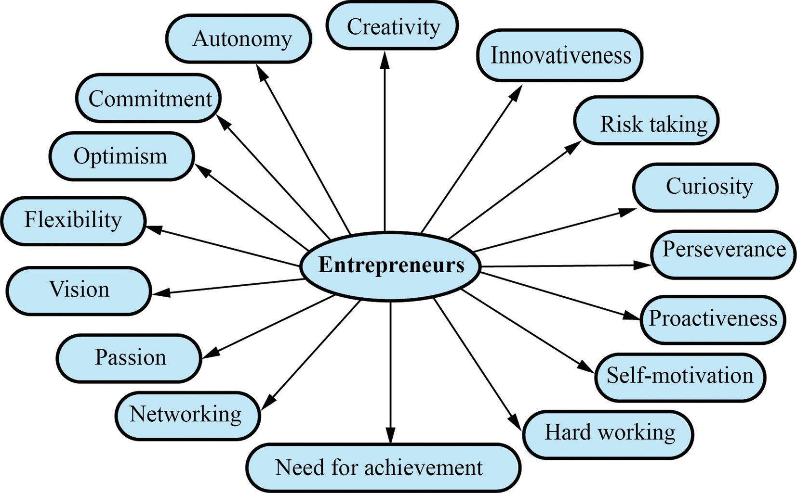

Characteristics of entrepreneurs
Entrepreneurs have many characteristics that affect their entrepreneurial behaviour and enterprising tendencies.However, for the entrepreneurs to be successful in their endeavour, they need to possess the following characteristics (attributes) as shown in Figure 2.2.
